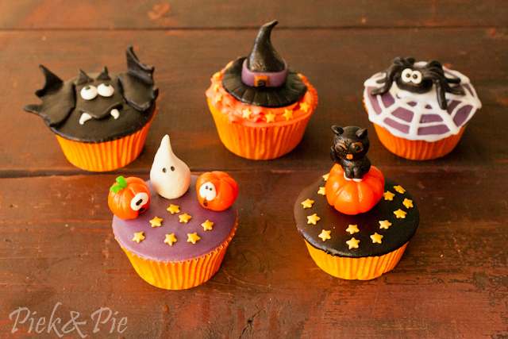

Nieuws
Geschreven door Dylan | 10-10-2016
Horen jullie de Jingle Bells al rinkelen? Het is eindelijk november en dat betekent dat we ons mogen gaan voorbereiden op die heerlijke tijd van kerstbomen, gezellige lichtjes, cadeautjes, vrolijke liedjes, en natuurlijk héél veel bakken! Bekijk snel ons kerstassortiment want we hebben zo veel leuke spullen, je gaat die twee maanden voor kerst hard nodig hebben om alles te gebruiken! Hou bovendien ook onze Facebook-pagina in de gaten, want er komen een aantal hele leuke winacties aan…
Geschreven door Lianna | 12-10-2016
Is jouw dochter, zusje, kleindochter of nichtje ook zo gek op Frozen? De rage gaat aan weinig jonge meisjes voorbij. Met het nieuwe strooisel van FunCakes – de Frozen Medley – geef je je taarten en cupcakes moeiteloos Elsa’s winterwondere stijl. En heb je deze rage nou niet zo meegekregen, dan doet dit strooisel het met de winter op komst alsnog harstikke goed.
Geschreven door Lianna | 12-10-2016
We hebben sinds kort ook herfst cupcakes! We hebben hier lang aan lopen werken en we hebben de beste ingredienten hiervoor uitgezocht. Het is speciaal gemaakt voor de herfst. Het is gemaakt van een verschillende kleuren die te maken hebben met halloween, om de echte halloween sfeer erin te brengen. Hieronder een foto.
